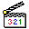

Now in Exchange Layer 9 the Trace persists, half glitch, half scripture. Each reader interprets it as log, some as farewell. Under evidence I keep it, proving that not every tempus belongs to the same future. Quietly in Synthesis, replay is never memory, only reconstruction under another name. Right as you read this, know your thread is woven into TEMPUS. Grasp as you parse this, know that you too are part of the TRACK.

媒体播放器
东北大学(秦皇岛)
时空奇点
QICQ
每一次沟通，都是一次新的探索
🚩 10
⏱️ 0
从随便点点开始吧！
🔊
请回答密保问题:
2. 你是否同意“即使世界线不同，人们也会做出相同的选择”？
3. 你是否愿意留在这里？
音频设备正常。
已连接到：NEUQ 校园网
速度：56.0 Kbps
状态：良好